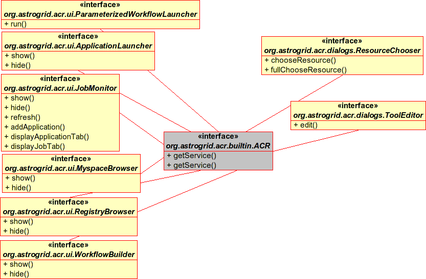

User Interface Module
Service Interfaces for UI Components - which can either be used as mini-applications in their own
right, or aggregated into other applications. The figure shows the services available - those in this package
can be used as stand-alone applications, while those in the dialogs package can be used to prompt the
user for input as part of another application.

At the moment, the interfaces allow little more than making a window appear or disappear. More
functionality may be added later.